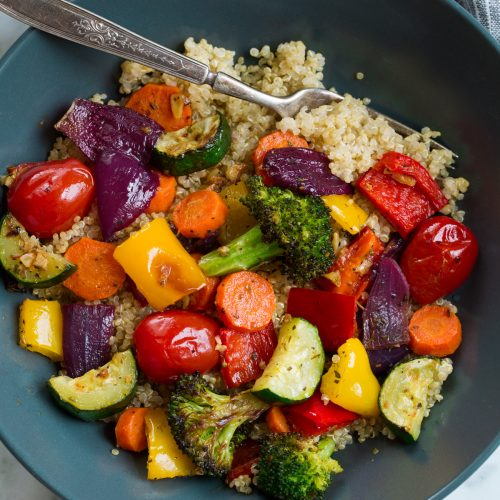

Veggie

A colourful veggie dish
Description
A colourful selection of vegetables stir fried and a joy to eat!
Ingredients for two people.
- Eight or nine Cherry tomatos
- 1 medium Carrot
- 1/2 a Zukini
- Eight or nine Broccoli florets
- 1/2 a Red onion
- 1/2 a Yellow Capsicum pepper
- 1 tbspn cooking oil.
- 1 tbspn Soya sauce (optional).
- 10 gm Couscous
Steps
- Cut the Carrot, Zukini, Red onion and Yellow Capsicum
into 2 - 3 cm pieces (the carrot pieces thinner so they
will cook in the same time as the other veggies)
- Heat the oil in a saucepan or Wok if you have one.
- Heat a small pan of (about 100ml) water for the Couscous.
- When the oil is hot throw in all the veggies and cook until
they are soft enough to eat. I like them a bit alle dente.
- When water boils turn it off and throw in the Couscous,
use a fork to separate Couscous.
- Serve veggies and Couscous on a warm plate and throw over
the Soya sauce
Looks good and tastes good!
Disclaimer - 'throw' is used as a cool funky word -
avoid injury by 'carefully placing' the items. Thankyou!